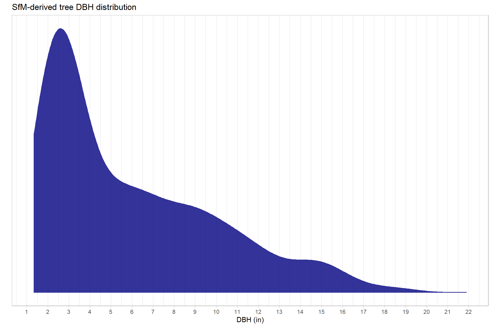
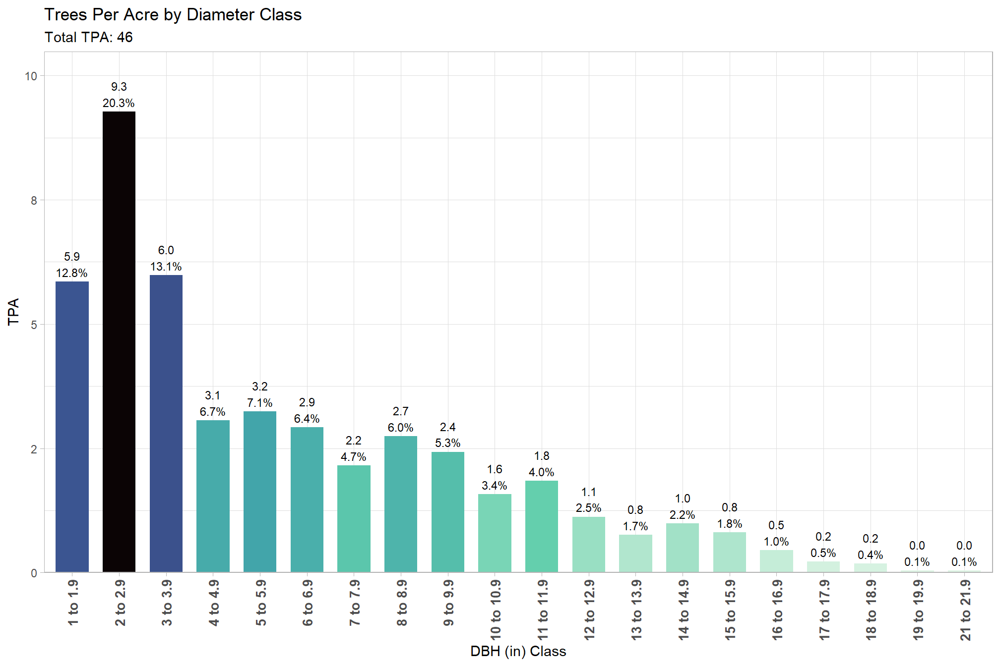
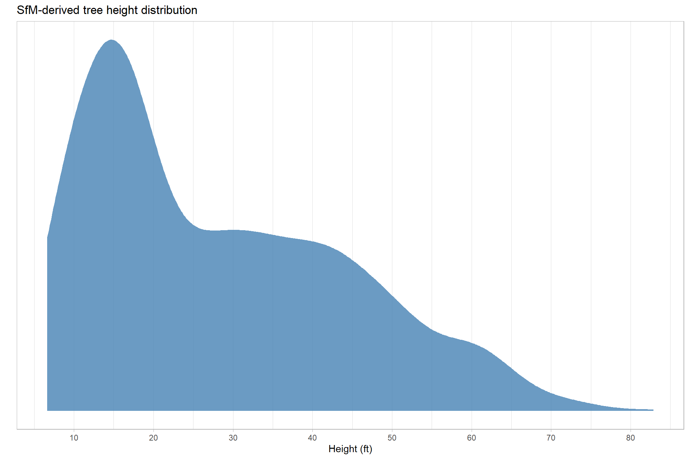
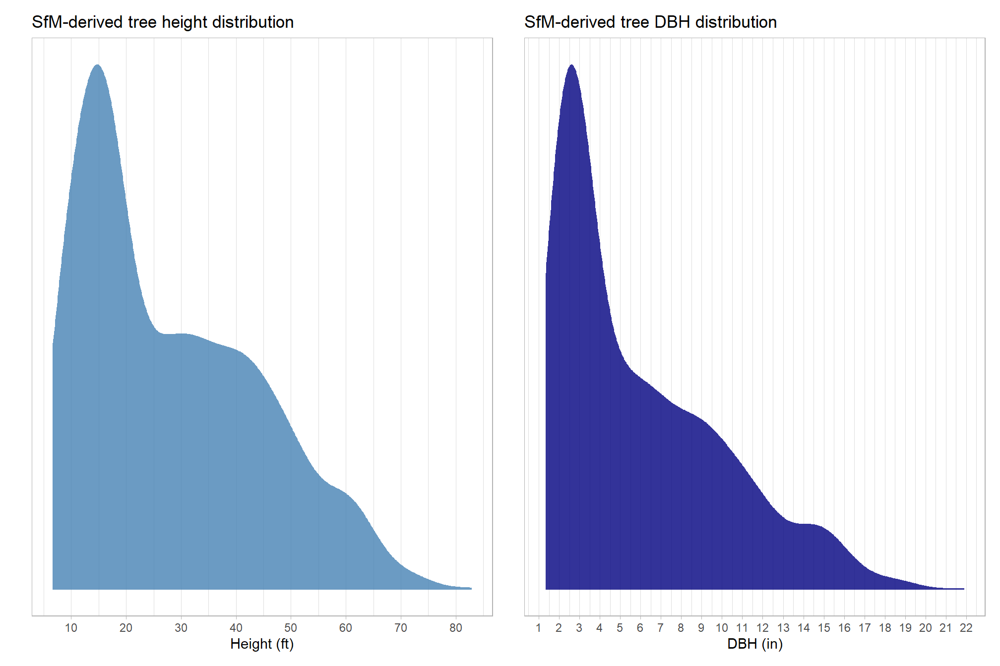
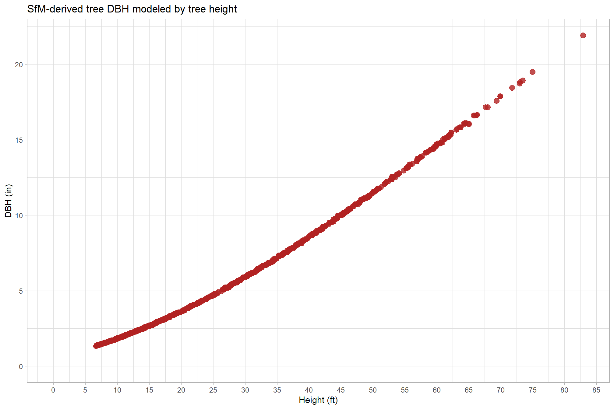

Section 4 Silvicultural Metrics
Overstory metrics are calculated using the UAS SfM-derived DBH and height measurements, where DBH is estimated using a local DBH-Height allometric relationship. In the following analysis and reporting, overstory includes any tree where the DBH is 6.0 in. (15.24 cm) or greater. Understory includes any tree where the DBH is less than 6.0 in. (15.24 cm) or greater.
# Common silvicultural metrics are calculated for the entire extent.
# Note, that stand-level summaries can be computed if stand vector data is provided.
# metrics include:
# "n_trees"
# "stand_area_ha"
# "trees_per_ha"
# "mean_dbh_cm"
# "qmd_cm"
# "mean_tree_height_m"
# "loreys_height_m"
# "basal_area_m2"
# "basal_area_m2_per_ha"
# filter trees based on stand area
harvests_trees = stand_sf %>%
dplyr::mutate(
stand_area_m2 = sf::st_area(.) %>% as.numeric()
, stand_area_ha = stand_area_m2/10000
, suid = "1"
) %>%
dplyr::select(
suid, stand_area_m2, stand_area_ha
) %>%
sf::st_intersection(treetops_sf_with_dbh)
### stand-level summaries
silv_metrics = harvests_trees %>%
sf::st_drop_geometry() %>%
# dplyr::filter(dbh_cm >= ostory_dbh_cm) %>%
dplyr::ungroup() %>%
dplyr::group_by(suid,stand_area_ha) %>%
dplyr::summarise(
n_trees = dplyr::n_distinct(treeID)
, mean_dbh_cm = mean(dbh_cm, na.rm = T)
, mean_tree_height_m = mean(tree_height_m, na.rm = T)
, loreys_height_m = sum(basal_area_m2*tree_height_m, na.rm = T) / sum(basal_area_m2, na.rm = T)
, basal_area_m2 = sum(basal_area_m2, na.rm = T)
, sum_dbh_cm_sq = sum(dbh_cm^2, na.rm = T)
) %>%
dplyr::ungroup() %>%
dplyr::mutate(
trees_per_ha = (n_trees/stand_area_ha)
, basal_area_m2_per_ha = (basal_area_m2/stand_area_ha)
, qmd_cm = sqrt(sum_dbh_cm_sq/n_trees)
) %>%
dplyr::select(-c(sum_dbh_cm_sq)) %>%
# convert to imperial units
calc_imperial_units_fn() %>%
dplyr::select(
"suid"
, "n_trees"
, "stand_area_ha"
, "trees_per_ha"
, "mean_dbh_cm"
, "qmd_cm"
, "mean_tree_height_m"
, "loreys_height_m"
, "basal_area_m2"
, "basal_area_m2_per_ha"
# imperial
, "stand_area_ac"
, "trees_per_ac"
, "mean_dbh_in"
, "qmd_in"
, "mean_tree_height_ft"
, "loreys_height_ft"
, "basal_area_ft2"
, "basal_area_ft2_per_ac"
)
### export tabular
write.csv(
silv_metrics
, paste0(delivery_dir, "/stand_silv_metrics.csv")
, row.names = F
)tab_met_fn = function(my_suid){
silv_metrics %>%
dplyr::filter(suid == my_suid) %>%
sf::st_drop_geometry() %>%
dplyr::select(
"suid"
, "stand_area_ha"
, "n_trees"
, "trees_per_ha"
, "mean_dbh_cm"
, "qmd_cm"
, "mean_tree_height_m"
, "loreys_height_m"
, "basal_area_m2_per_ha"
) %>%
tidyr::pivot_longer(
cols = -c(suid), names_to = "metric", values_to = "val"
) %>%
# order metrics
dplyr::mutate(
metric = factor(
metric
, ordered = T
, levels = c(
"stand_area_ha"
, "n_trees"
, "trees_per_ha"
, "mean_tree_height_m"
, "loreys_height_m"
, "mean_dbh_cm"
, "qmd_cm"
, "basal_area_m2_per_ha"
)
, labels = c(
latex2exp::TeX("Stand Area (ha)", output = "character")
, latex2exp::TeX("Number of Trees", output = "character")
, latex2exp::TeX("Trees $ha^{-1}$")
, latex2exp::TeX("Mean Tree Height (m)", output = "character")
, latex2exp::TeX("Lorey's Mean Height (m)", output = "character")
, latex2exp::TeX("Mean DBH (cm)", output = "character")
, latex2exp::TeX("QMD (cm)", output = "character")
, latex2exp::TeX("Basal Area $m^{2} \\cdot ha^{-1}$")
)
)
) %>%
dplyr::mutate(val = scales::comma(val,accuracy=0.1)) %>%
dplyr::select(metric, val) %>%
ggpubr::ggtexttable(
rows = NULL
, cols = rep("", 2)
, theme = ggpubr::ttheme(
base_style = "blank"
, tbody.style = ggpubr::tbody_style(
parse = T, fill = "white", linecolor = "gray"
, size = 10
)
)
) %>%
ggpubr::tab_add_title(
text = paste0(
"Silvicultural Metrics (metric)"
# , "\nOverstory (>= "
# , scales::comma(ostory_dbh_cm,accuracy = 0.1)
# , " cm DBH)"
)
, face = "bold"
, size = 10, padding = unit(0.5, "line")
)
}
# tab_met_fn(1)tab_imp_fn = function(my_suid){
silv_metrics %>%
dplyr::filter(suid == my_suid) %>%
sf::st_drop_geometry() %>%
dplyr::select(
"suid"
, "stand_area_ac"
, "n_trees"
, "trees_per_ac"
, "mean_dbh_in"
, "qmd_in"
, "mean_tree_height_ft"
, "loreys_height_ft"
, "basal_area_ft2_per_ac"
) %>%
tidyr::pivot_longer(
cols = -c(suid), names_to = "metric", values_to = "val"
) %>%
# order metrics
dplyr::mutate(
metric = factor(
metric
, ordered = T
, levels = c(
"stand_area_ac"
, "n_trees"
, "trees_per_ac"
, "mean_tree_height_ft"
, "loreys_height_ft"
, "mean_dbh_in"
, "qmd_in"
, "basal_area_ft2_per_ac"
)
, labels = c(
latex2exp::TeX("Stand Area (ac)", output = "character")
, latex2exp::TeX("Number of Trees", output = "character")
, latex2exp::TeX("Trees $ac^{-1}$")
, latex2exp::TeX("Mean Tree Height (ft)", output = "character")
, latex2exp::TeX("Lorey's Mean Height (ft)", output = "character")
, latex2exp::TeX("Mean DBH (in)", output = "character")
, latex2exp::TeX("QMD (in)", output = "character")
, latex2exp::TeX("Basal Area $ft^{2} \\cdot ac^{-1}$")
)
)
) %>%
dplyr::mutate(val = scales::comma(val,accuracy=0.1)) %>%
dplyr::select(metric, val) %>%
ggpubr::ggtexttable(
rows = NULL
, cols = rep("", 2)
, theme = ggpubr::ttheme(
base_style = "blank"
, tbody.style = ggpubr::tbody_style(
parse = T, fill = "white", linecolor = "gray"
, size = 10
)
)
) %>%
ggpubr::tab_add_title(
text = paste0(
"Silvicultural Metrics (imperial)"
# , "\nOverstory (>= "
# , scales::comma(ostory_dbh_cm/2.54,accuracy = 0.1)
# , " in. DBH)"
)
, face = "bold"
, size = 10, padding = unit(0.5, "line")
)
}
# tab_imp_fn(1)4.2 DBH Distrubtion
dbh_temp = harvests_trees %>%
sf::st_drop_geometry() %>%
dplyr::select(treeID, dbh_in) %>%
dplyr::ungroup() %>%
dplyr::distinct() %>%
ggplot(
mapping = aes(x = dbh_in)
) +
geom_density(alpha = 0.8, fill = "navy", color = NA) +
labs(
x = "DBH (in)"
, y = ""
, title = "SfM-derived tree DBH distribution"
) +
scale_x_continuous(breaks = scales::extended_breaks(n=20)) +
scale_y_continuous(breaks = NULL) +
theme_light() +
theme(
legend.position = "none"
)
dbh_temp
tpa_temp =
harvests_trees %>%
sf::st_drop_geometry() %>%
dplyr::select(treeID, dbh_in, stand_area_ha) %>%
dplyr::ungroup() %>%
dplyr::distinct() %>%
dplyr::mutate(
dbh_cl = ggplot2::cut_width(dbh_in, width = 1, center = 0.5, closed = "left")
) %>%
dplyr::group_by(dbh_cl) %>%
dplyr::summarise(
n_trees = dplyr::n()
, trees_per_ac = dplyr::n()/max(stand_area_ha %>% `*`(2.471))
, trees_per_ha = dplyr::n()/max(stand_area_ha)
) %>%
dplyr::ungroup() %>%
dplyr::mutate(
tot_trees_per_ac = sum(trees_per_ac)
, tot_trees_per_ha = sum(trees_per_ha)
, pct = trees_per_ac/tot_trees_per_ac
, dbh_cl_lab = paste0(
stringr::word(dbh_cl, 1, sep = fixed(",")) %>% readr::parse_number()
, " to "
, stringr::word(dbh_cl, -1, sep = fixed(",")) %>% readr::parse_number() %>% `-`(0.1)
) %>%
factor() %>%
forcats::fct_reorder(stringr::word(dbh_cl, 1, sep = fixed(",")) %>% readr::parse_number())
)
# plot
tpa_temp %>%
ggplot(
mapping = aes(
x = dbh_cl_lab, y = trees_per_ac
, fill=trees_per_ac
, label = paste0(
scales::comma(trees_per_ac, accuracy = 0.1)
, "\n"
, scales::percent(pct, accuracy = 0.1)
)
)
) +
geom_col(width = 0.7) +
geom_text(color = "black", size = 3, vjust = -0.2) +
scale_fill_viridis_c(option = "mako", direction = -1) +
scale_y_continuous(labels = scales::comma_format(accuracy = 1),expand = expansion(mult = c(0, .13))) +
labs(
x = "DBH (in) Class"
, y = "TPA"
, title = "Trees Per Acre by Diameter Class"
, subtitle = paste0(
"Total TPA: "
, scales::comma(tpa_temp$tot_trees_per_ac[1], accuracy = 1)
)
) +
theme_light() +
theme(
legend.position = "none"
, axis.text.x = element_text(angle = 90, size = 10, face = "bold", vjust = 0.5, hjust = 1)
)
4.3 Height Distribution
ht_temp = harvests_trees %>%
sf::st_drop_geometry() %>%
dplyr::select(treeID, tree_height_ft) %>%
dplyr::ungroup() %>%
dplyr::distinct() %>%
ggplot(
mapping = aes(x = tree_height_ft)
) +
geom_density(alpha = 0.8, fill = "steelblue", color = NA) +
labs(
x = "Height (ft)"
, y = ""
, title = "SfM-derived tree height distribution"
) +
scale_x_continuous(breaks = scales::extended_breaks(n=10)) +
scale_y_continuous(breaks = NULL) +
theme_light() +
theme(
legend.position = "none"
)
ht_temp
height + DBH

# save it
ggplot2::ggsave(paste0(delivery_dir, "/ht_dbh_dist.jpeg"), dpi = "print", height = 7, width = 10.5, device = "jpeg")ggplot(data = harvests_trees, mapping = aes(y = dbh_in, x = tree_height_ft)) +
geom_point(size = 3, alpha = 0.8, color = "firebrick") +
scale_y_continuous(limits = c(0,NA), breaks = scales::extended_breaks(6)) +
scale_x_continuous(limits = c(0,NA), breaks = scales::extended_breaks(15)) +
labs(
title = "SfM-derived tree DBH modeled by tree height"
, x = "Height (ft)"
, y = "DBH (in)"
) +
theme_light()